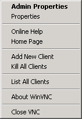
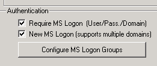
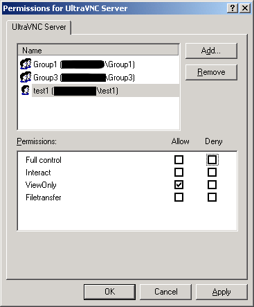

With Ultra@VNC the WinVNC Server access can be managed using MS Users, Domains and Groups available from the machine that is hosting this WinVNC server. NT domains and active directories are supported.
In addition to the first implementation of MS-Logon (MS-Logon I), MS-Logon II is able to do cross-domain authentication, i.e. the user account can be in another domain than the computer account.
MS-Logon II should work with Windows NT, Windows 2000, Windows XP and Windows 2003.
For W2K SP4 and W2K3 only as ultravnc service because of new restrictions
(SeImpersonatePrivilege, see Knowlegdebase article 821546).
Should recognize any nesting of groups.
Should support domain\user and user@domain.com (UPN) naming.
ForceGuest registry value is set to 1 by default in the following registry key:
HKEY_LOCAL_MACHINE\SYSTEM\CurrentControlSet\Control\Lsa
ForceGuest is disabled (set to 0), SSPI will log on as the specified user.
ForceGuest. Otherwise all authorization is done against the guest account!
Right click the WinVNC icon in the System Tray and choose "Admin Properties".

In the Admin Properties page check "Require MS-Logon" and "New MS-Logon".

Then click on "Configure MS Logon Groups".
Here you can add or remove users and groups or change their rights.

Interact is the normal mode where you can take over mouse and keyboard. It's a synonym for Full Control.
ViewOnly allows the account to view the remote screen, but local mouse and keyboard cannot control the remote screen.
You can use the MSLogonACL tool to export the ACL from one machine and import it to another.
Since MSLogon II is relatively new and there are various different scenarios how to use it, we encourage everybody to share their experience.
Please post your results to the UltraVNC MS-Logon forum.
There are a number of factors which are to be considered: Different OS versions, if Active Directory is used or old-style NT trusts,
whether local or domain based accounts are used, the naming convention which is used and various possible nesting of groups.
Please post feedback to the UltraVNC MS-Logon forum